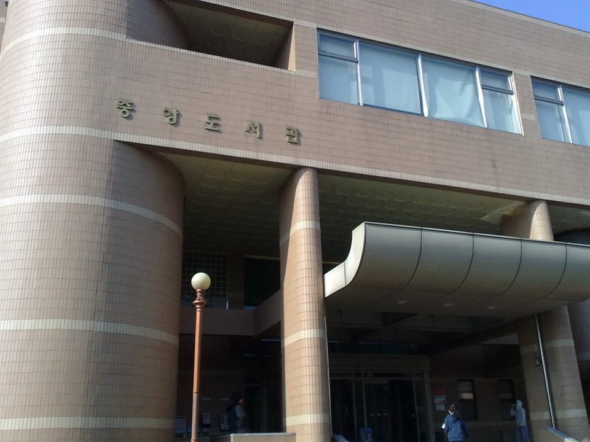

"서울시립대는 영어를 적게 본다"는 말을 들어 보셨을 겁니다. 반은 맞고 반은 틀립니다. 같은 대학 안에서 영어 비중이 10%인 곳과 20%인 곳이 함께 있습니다. 계열을 인문Ⅰ·인문Ⅱ·자연으로 나눠 놓았기 때문입니다. 어느 칸을 보고 있는지 모르면 영어에 쓸 시간을 정할 수 없습니다. 이 글은 그 표를 그래서 어느 과목을 먼저로 바꿔 읽는 글입니다. 고3 수학과외에 시간을 얼마나 줄지 정하는 기준이 됩니다.
| 계열 | 국어 | 수학 | 영어 | 탐구 |
|---|---|---|---|---|
| 인문계열Ⅰ | 35% | 35% | 15% | 15% |
| 인문계열Ⅱ | 35% | 25% | 20% | 20% |
| 자연계열 | 30% | 40% | 10% | 20% |
수능 100%, 1000점 만점으로 산출합니다. 탐구는 두 과목을 응시해 백분위 기반 변환표준점수로 반영합니다. 어느 학과가 인문Ⅰ이고 어느 학과가 인문Ⅱ인지는 모집단위별로 정해져 있으니, 지원할 학과가 어느 칸인지부터 확인하셔야 합니다.
자연계열은 수학 40%, 국어 30%, 탐구 20%, 영어 10%입니다. 수학이 국어보다 10%p 더 무겁고 영어의 네 배입니다. 이 구조에서 나오는 결론은 하나입니다. 수학 한 문항의 값이 영어 한 등급보다 클 수 있습니다.
그래서 자연계열을 보고 있다면 순서는 수학 → 국어 → 탐구 → 영어입니다. 영어를 버리라는 뜻은 아닙니다. 10%도 1000점 만점에서 100점이고, 등급이 크게 무너지면 회복이 안 됩니다. 다만 영어를 올리려고 수학 시간을 줄이는 선택은 이 표에서 손해입니다.
인문계열Ⅰ은 국어와 수학이 각각 35%로 같고, 영어와 탐구가 15%씩입니다. 국어·수학 두 과목이 합쳐서 70%를 차지하는, 상당히 뚜렷한 구조입니다. 두 과목 중 하나가 흔들리면 다른 어디서도 메울 수 없습니다.
인문계열Ⅱ는 국어 35%로 같지만 수학이 25%로 내려가고, 대신 영어와 탐구가 각각 20%로 올라갑니다. 수학이 약하고 영어·탐구가 안정적인 학생에게는 같은 대학 안에서 인문Ⅱ 쪽이 훨씬 유리한 칸이 됩니다.
정리하면 이렇습니다. 수학이 강점이면 인문Ⅰ, 영어·탐구가 강점이면 인문Ⅱ. 지원 전략을 짤 때 학과 이름보다 이 칸을 먼저 보는 것이 순서입니다.
한국사는 위 표의 영역별 비율에 들어가지 않습니다. 대신 등급에 따라 총점에서 빼는 방식으로 반영됩니다. 잘 봐서 점수를 얹는 영역이 아니라, 못 보면 깎이는 영역이라는 뜻입니다. 목표는 단순합니다. 감점 구간에 들어가지 않을 만큼만 확보해 두고 시간을 더 쓰지 않는 것입니다. 정확한 감점 폭은 요강으로 확인하세요.
학생 수준에 맞는 선생님을 24시간 안에 추천해 드려요. 상담은 무료입니다.